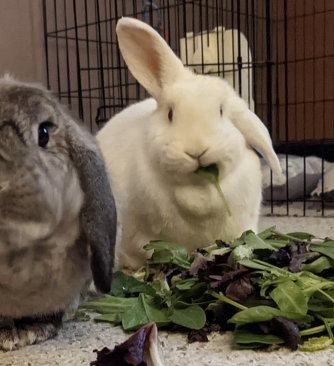

Kerplunk
Breed: Lop Mix
Sex: Female
Age: 8 Years, 7 Months
Weight: 6.5 Pounds
Bio
Hi, my name is Kerplunk! I'm bonded to Kirby and we are a delightful pair with a lot of attitude. I'm the more shy
between us, but that doesn't mean I'm afraid... I just like to do my own thing sometimes. If you have patience
with me, you will be greatly rewarded by my big personality. My foster family loves watching Kirby and me; we make
them laugh when we steal lettuce from each other! But we like to snuggle with each other as well. Kirby likes
being pet a bit more than I do... but I do like to come up and see what my humans are up to!
Kirby and I
are fairly tidy outside of our litter box area, but we can make a mess there now and then. We like a big box! And
I do tend to shed my fur quite a bit, so some grooming will definitely be required.
Want to Support Me?
To support me, or any of the sanctuary rabbits at the IHRS, please Donate to our GoFundMe if you are able.